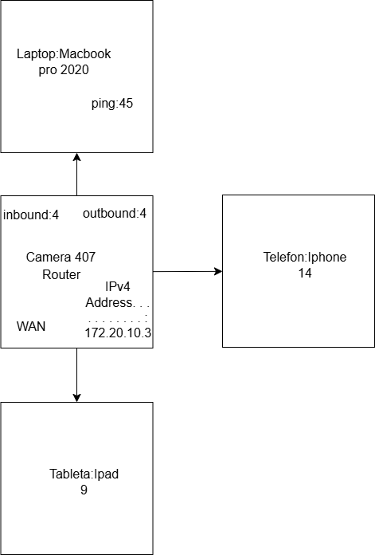
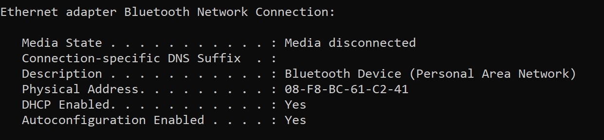
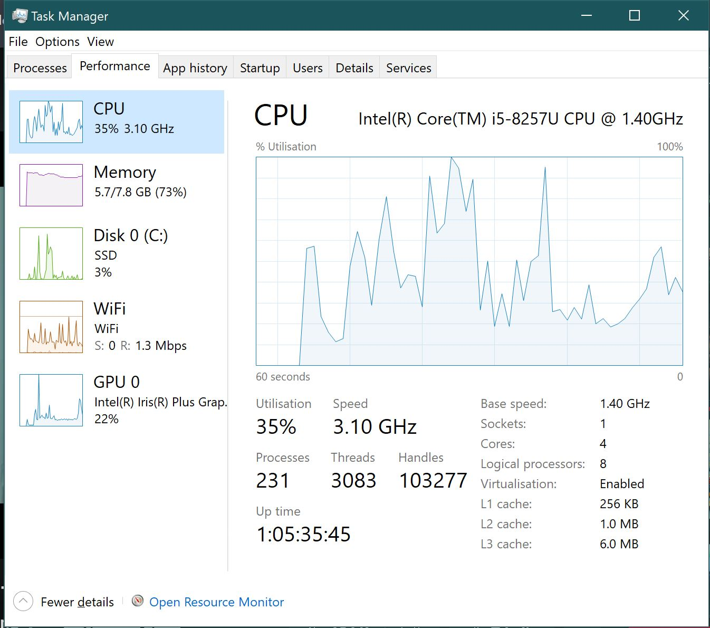
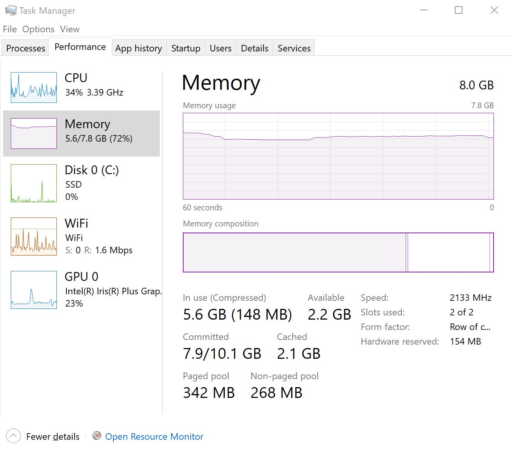
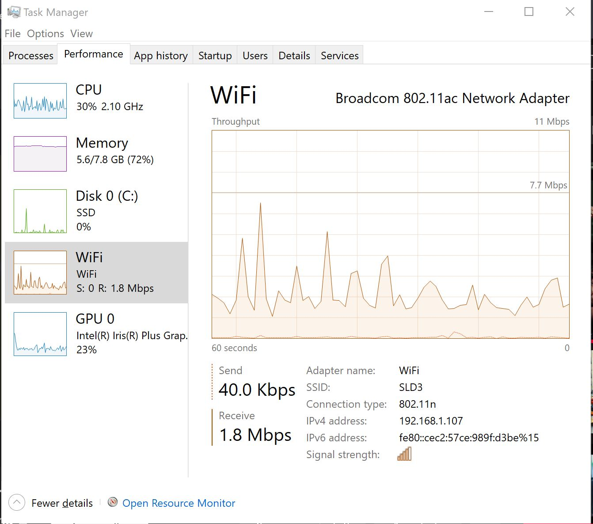

Componente și caracteristici
| Denumire | Producător | Caracteristici |
|---|---|---|
| Procesor | Apple | M1, 8 Core, arhitectură ARM, eficiență ridicată |
| Memorie RAM | Apple | 8 GB Unified Memory, lățime mare de bandă |
| Placă video | Apple | GPU M1, 8 nuclee, randare grafică puternică |
| Stocare | Apple | 512 GB SSD, viteze de scriere/citire 3,3 GB/s |
| Ecran | Apple | Retina 13,3", rezoluție 2560 x 1600, True Tone |
| Baterie | Apple | 58,2 Wh, până la 20 de ore autonomie |
| Conectivitate | Apple | Wi-Fi 6, 2x Thunderbolt 3, Bluetooth 5.0 |
| Sistem de operare | Apple | macOS Big Sur (actualizabil la macOS Sonoma) |
Structura rețelei

Caracteristicile conexiunii la rețea
- Viteză: 1 Gbps
- Tip conexiune: Wi-Fi 6
- ISP: Digi
- Router: TP-Link Archer AX50

Monitorizare resurse
Apasati dublu-click pentru a putea vedea efectul slide-show!
  